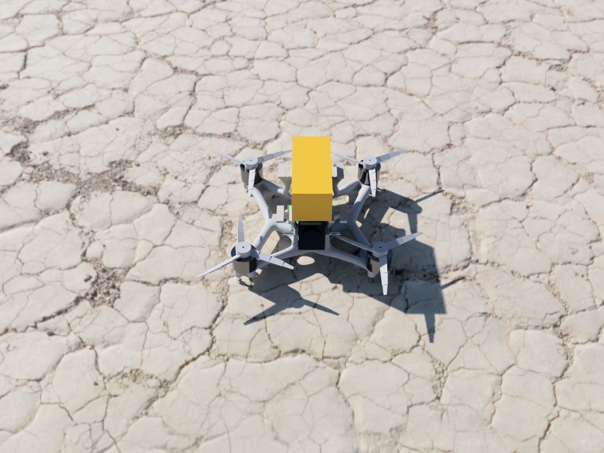

A generatively designed 3-inch FPV drone frame
Two printed frames that keep the whole drone under the CAA's 250 g limit. V1 is a 38 g generated frame, 36% lighter than a plate frame; V2 is one 52 g part, redesigned to print and build easily.


Loading model
| Item | Part | Qty | Mass |
|---|---|---|---|
| 1 | 1 | 52 g | |
| 2 | 4 | ||
| 3 | 4 | ||
| 4 | 1 | ||
| 5 | 1 | ||
| 6 | 1 | ||
| 7 | 8 | ||
| 8 | 1 | ||
| 9 | 1 | ||
| 10 | 1 | ||
| 11 | 1 | ||
| 12 | 1 | ||
| All-up | 25 | ~240 g |
| Item | Part | Qty | Mass |
|---|---|---|---|
| 1 | 1 | 38 g | |
| 2 | 4 | ||
| 3 | 4 | ||
| 4 | 1 | ||
| 5 | 1 | ||
| 6 | 1 | ||
| 7 | 1 | ||
| 8 | 8 | ||
| 9 | 26 | ||
| All-up | 47 | 246 g |
V1: approach
Eight load cases, from maximum thrust to arm collision, drove Fusion's generative optimisation with a 1.5 safety factor. The result is 36% lighter than a plate frame.
V1: build and testing
Printed in PC/ABS, the frame weighs 38 g and the drone 246 g. Measured arm deflection agreed with Ansys to within 18%.
V2: redesigned to be made
V1's thin generated struts were hard to print, and its electronics hung off stacked standoffs. V2 is one part with thicker members and the camera cage, battery deck and mounts built in. It weighs 14 g more, yet the drone is 6 g lighter, even with an action camera on top.
V2: analysis
Each motor mount loaded with 40 N:
- Strength and buckling. Safety factor 5.
- Resonance. First mode at 200 Hz, clear of the motors' running frequencies.
| V1 | V2 | |
|---|---|---|
| Frame | 38 g, generated, PC/ABS | 52 g, one printed part |
| Drone, all-up | 246 g | ~240 g |
| Margin to 250 g | 4 g | ~10 g |
| Frame size | 111 × 111 mm | 147 × 125 mm |
| Motor centres | 96 × 96 mm | 125 × 98 mm |
| Diagonal | 136 mm | 159 mm |
| Safety factor | 1.5, max. thrust | 5, 40 N per mount |
| Buckling SF | constrained | 5, 40 N per mount |
| First mode | – | 200 Hz |
| Electronics | FC and VTX on 8 standoffs | FC and ESC on 8 soft-mount grommets |
| Carries | FPV camera | FPV camera and action camera |